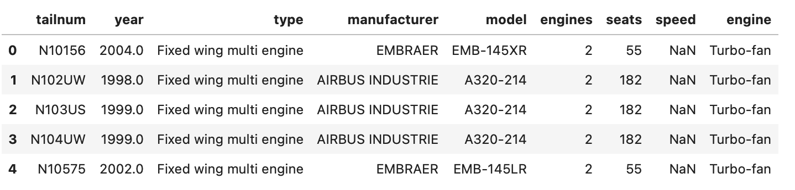

layout: true <div class="slide-footer"></div> --- class: center, middle # Review of Basic Python for Data Science --- # Agenda 1. The Tools -- Python and Jupyter 2. Basic Python 3. Pandas DataFrames 4. Selecting, Indexing, and Filtering 5. Summarizing Data --- # Goals 1. Students will be comfortable performing basic data manipulation on tabular datasets using Pandas. --- # Prerequisite Knowledge 1. Students should know how to run Python code on their own computers, either within Jupyter Notebooks, from another interactive development environment, or via the command line. 2. Students should already be familiar with most of the concepts covered -- this section is intended as review. --- class: center, middle ## #1 # The Tools -- Python and Jupyter --- # Python - Python is an extremely popular programming language. - Known for **readability** and **versatility**. - "The second-best language for everything" - Although it's the *most* popular language for data science, and maybe for web scraping too. - Has a huge, rich ecosystem of third-party packages that act as "add-ons", giving it the ability to do even more. --- # Integrated Development Environments (IDEs) - Most coders like to work in an environment that has special tools to make programming easier: - Syntax highlighting - Ability to run code easily - Visualization of code outputs --- # Integrated Development Environments (IDEs) - There are hundreds (or more) of IDEs that support Python. - However, the most popular right now are: - JupyterLab - VSCode - PyCharm - Vim --- # JupyterLab and Jupyter Notebooks - JupyterLab is most popular among data scientists. - It uses a special type of Python file called a **Jupyter notebook**. - Other editors use the more traditional Python format of "script" file. - Notebooks are special because: - They allow you to store code in discrete chunks to mark logical boundaries - They support inline *markdown*, or stylized text, that allow the user to explain the code inline. - They can render complex outputs (like charts), and show results immediately after the code that produced them. - Because of their ability to show visuals, notebooks are ideal for data exploration. They also tend to produce more readable, shareable code -- especially in the case of analysis code. --- class: center, middle ## Questions --- class: center, middle ## #2 # Basic Python --- # Basic Data Types -- - **integers** (`int`): Whole numbers, positive or negative or zero - e.g. `3`, `0`, `-531` -- - **floats** (`float`): Decimal numbers - e.g. `3.14`, `0.0004`, `-878.482` -- - **strings** (`str`): Arbitrary text - e.g. `"hello"`, `'my name is ethan'`, "" -- - **booleans** (`bool`): Logical values `True` and `False` - `True`, `False` -- that's it --- # Container Types - Python also has some objects that can "contain" others... --- # Container Types **lists** (`list`): Ordered, 1-dimensional sequences of objects - Elements may be different types of things. -- ```python my_list = ['a', 'b', 3, 84.51, False] # Elements can be accessed by index (which counts from 0!): my_list[1] ``` ``` "b" ``` --- # Container Types **dictionaries** (`dict`): Mappings from "keys" to "values", good for looking up entries by their key -- ```python my_dict = { 'address': '123 Oak Street', 'city': 'Chicago', 'bedrooms': 2, 'bathrooms': 1, 'rent': 1599.99 } # Values can be "looked up" by key my_dict['bedrooms'] ``` ``` 2 ``` --- # Other Types - There are many many more data types in Python that you may hear about, but these (along with DataFrames, covered next) are the ones we'll mostly be using. - The general term for a Python "thing" (of any type) is an **object**. --- class: center, middle ## Questions --- class: center, middle ## #3 # Pandas DataFrames --- # Pandas - The Pandas package is the backbone of data analysis in Python - Pandas is all about **DataFrames**, objects that store tabular data - The package was originally developed by financial analysts who wanted to do data analysis in Python, but needed an abstraction similar to DataFrames from the R language to do so. - The funny name is short for **Pan**el **Da**ta --- # DataFrames -- Basics - DataFrames are tabular data - Think: DataFrames in R, tables in SQL, Datasets in SAS - DataFrames have **column names** and **row indices**  - We'll use this DataFrame of planes for many of our examples in this section. --- # DataFrames -- Basics In most situations, DataFrames just render as text: ``` tailnum year type manufacturer model engines seats speed engine 0 N10156 2004.0 Fixed wing multi engine EMBRAER EMB-145XR 2 55 NaN Turbo-fan 1 N102UW 1998.0 Fixed wing multi engine AIRBUS INDUSTRIE A320-214 2 182 NaN Turbo-fan 2 N103US 1999.0 Fixed wing multi engine AIRBUS INDUSTRIE A320-214 2 182 NaN Turbo-fan 3 N104UW 1999.0 Fixed wing multi engine AIRBUS INDUSTRIE A320-214 2 182 NaN Turbo-fan 4 N10575 2002.0 Fixed wing multi engine EMBRAER EMB-145LR 2 55 NaN Turbo-fan ``` -- But in JupyterLab, DataFrames have a stylized representation: --- # DataFrames -- Importing Data - Easy to read in data from common formats (CSV, JSON, SQL databases) - `pd.read_csv`, `pd.read_json`, `pd.read_excel`, `pd.read_sql` are several of the many options for importing data. - When reading from a flat file, just pass in the path to the file. ```python df = pd.read_csv('data/my_data.csv') df = pd.read_json('data/my_data.json') df = pd.read_excel('data/my_spreadsheet.xlsx') # SQL tables require first creating a connection to the database, which varies by type of DB df = pd.read_sql('my_table', db_connection) ``` - Other formats Pandas can read: parquet, fixed-width text, feather, Stata, SAS, pickle, HDF5 - Also can read from the web, which we'll come back to: **`pd.read_html`** --- # DataFrames -- Inspecting Data `df.head()` is usually the place to start -- returns the first 5 rows <br><br><br><br> ```python planes_df.head() ``` --- # DataFrames -- Inspecting Data Other options... ```python planes_df.shape # Return (n_rows, n_columns) ``` ``` (3322, 9) ``` ```python planes_df.columns # Return column names ``` ``` Index(['tailnum', 'year', 'type', 'manufacturer', 'model', 'engines', 'seats', 'speed', 'engine'], dtype='object') ``` --- # DataFrames -- Inspecting Data `df.info()` gives a comprehensive overview, ideal when working interactively. ```python planes_df.info() ``` ``` <class 'pandas.core.frame.DataFrame'> RangeIndex: 3322 entries, 0 to 3321 Data columns (total 9 columns): # Column Non-Null Count Dtype --- ------ -------------- ----- 0 tailnum 3322 non-null object 1 year 3252 non-null float64 2 type 3322 non-null object 3 manufacturer 3322 non-null object 4 model 3322 non-null object 5 engines 3322 non-null int64 6 seats 3322 non-null int64 7 speed 23 non-null float64 8 engine 3322 non-null object dtypes: float64(2), int64(2), object(5) memory usage: 233.7+ KB ``` --- # DataFrames -- Exporting Data - Pandas can save data in most of the formats it supports importing from. - Instead of `pd.read_FILETYPE`, it's usually `df.to_FILETYPE` ```python df.to_csv('data/my_data.csv') df.to_json('data/my_data.json') # Again, you need an existing database connection to work with SQL. df.to_sql('my_table', db_connection) ``` - We'll probably mostly save data in CSVs in this course, for simplicity. --- class: center, middle ## Questions --- class: center, middle ## #4 # Selecting, Indexing, and Filtering --- # Subsetting Data - Before you do much else, you need to be able to get at pieces of a DataFrame that you're interested in. - This usually means limiting to certain columns, to certain rows, or both at the same time. --- # Selecting - Subsetting data by its columns is often called **selecting** - You might say "select the name column from the data" - The syntax to select a single column is `df[column_name]` - This returns a **series** object, a 1-dimensional Pandas object - Series are a lot like Python lists, except all the data in them is usually of the same type --- # Selecting ```python planes_df['seats'] ``` ``` 0 55 1 182 2 182 3 182 4 55 ... 3317 100 3318 142 3319 100 3320 142 3321 142 Name: seats, Length: 3322, dtype: int64 ``` <br> - Remember, this isn't a DataFrame, it's a Series - One way to tell is the bottom line, which says the name of the column, the length (number of entries), and the type of the elements in it. --- # Selecting - Selecting multiple columns is done with double brackets - The inner brackets indicate to Pandas that you're passing a *list of columns* - Using double brackets returns a **DataFrame**, not a Series - You can even use double brackets with a single column if you don't want a Series --- # Selecting ```python planes_df[['seats', 'tailnum']] ``` ``` seats tailnum 0 55 N10156 1 182 N102UW 2 182 N103US 3 182 N104UW 4 55 N10575 ... ... ... 3317 100 N997AT 3318 142 N997DL 3319 100 N998AT 3320 142 N998DL 3321 142 N999DN [3322 rows x 2 columns] ``` --- # Selecting - `['seats', 'tailnum']` is actually a list we pass into `planes_df[]`, which is why we get a 2-dimensional object (a DataFrame) back. ```python columns = ['seats', 'tailnum'] planes_df[columns] ``` ``` seats tailnum 0 55 N10156 1 182 N102UW 2 182 N103US 3 182 N104UW 4 55 N10575 ... ... ... 3317 100 N997AT 3318 142 N997DL 3319 100 N998AT 3320 142 N998DL 3321 142 N999DN [3322 rows x 2 columns] ``` --- # Indexing - "Indexing" is the word we use for subsetting rows based on their location or row label. - Most things in Python index from 0. - That means an sequence with 3 elements would label them #0, #1, and #2. - DataFrames have row indexes, as we've discussed before. - You can think of them as row labels. - By default, they're just integers from 0 to (number_of_rows - 1). --- # Indexing - Here, the indices are 0-4. --- # Indexing - Indices can be selected using `df.loc` and brackets. ```python # Fetch the 3rd row (because we start counting at 0!) planes_df.loc[2] ``` ``` tailnum N103US year 1999.0 type Fixed wing multi engine manufacturer AIRBUS INDUSTRIE model A320-214 engines 2 seats 182 speed NaN engine Turbo-fan Name: 2, dtype: object ``` -- - Like selecting a single column, indexing a single row returns a **Series**, not a DataFrame. - Because, again, it's a 1-dimensional object. --- # Indexing - DataFrames can also be indexed with a *range*, instead of a single row index. - This uses the same `df.loc` syntax, except a range is passed - `df.loc[starting_index:ending_index]` ```python # Get rows at index 3 through index 6 (inclusive) planes_df.loc[3:6] ``` ``` tailnum year type manufacturer model engines seats speed engine 3 N104UW 1999.0 Fixed wing multi engine AIRBUS INDUSTRIE A320-214 2 182 NaN Turbo-fan 4 N10575 2002.0 Fixed wing multi engine EMBRAER EMB-145LR 2 55 NaN Turbo-fan 5 N105UW 1999.0 Fixed wing multi engine AIRBUS INDUSTRIE A320-214 2 182 NaN Turbo-fan 6 N107US 1999.0 Fixed wing multi engine AIRBUS INDUSTRIE A320-214 2 182 NaN Turbo-fan ``` --- # Combining Selecting and Indexing - You can select columns and index rows all at once using `df.loc[row_index, columns]` ```python # Row indices 3-6, columns "seats" and "tailnum" planes_df.loc[3:6, ['seats', 'tailnum']] ``` ``` seats tailnum 3 182 N104UW 4 55 N10575 5 182 N105UW 6 182 N107US ``` --- class: padded-table # Combining Selecting and Indexing | Goal | Syntax | |:- |:- | | Select columns | `df[columns]` | | Index rows | `df.loc[row_indices]` | | Select columns *and* index rows | `df.loc[row_indices, columns]` | --- # Filtering - *Filtering* means limiting rows based on a condition of the data - e.g. "all rows where the number of engines is greater than 2" - This is also done with `df.loc`, but you pass in an expression describing which rows to keep. --- # Filtering ```python # This syntax is a little clunky; the DataFrame name is specified twice. planes_df.loc[planes_df['engines'] > 2] ``` ``` tailnum year type manufacturer model engines seats speed 603 N281AT NaN Fixed wing multi engine AIRBUS INDUSTRIE A340-313 4 375 NaN 1037 N381AA 1956.0 Fixed wing multi engine DOUGLAS DC-7BF 4 102 232.0 2109 N670US 1990.0 Fixed wing multi engine BOEING 747-451 4 450 NaN 2706 N840MQ 1974.0 Fixed wing multi engine CANADAIR LTD CF-5D 4 2 NaN 2764 N854NW 2004.0 Fixed wing multi engine AIRBUS A330-223 3 379 NaN 2771 N856NW 2004.0 Fixed wing multi engine AIRBUS A330-223 3 379 NaN 2931 N905FJ 1986.0 Fixed wing multi engine AVIONS MARCEL DASSAULT MYSTERE FALCON 900 3 12 NaN ``` <br><br><br> .footnote[*Note to the eagle-eyed observer: I omitted the final column here for space considerations*] --- # Filtering ```python planes_df.loc[planes_df['seats'] == 139] ``` ``` tailnum year type manufacturer model engines seats speed engine 1813 N600TR 1979.0 Fixed wing multi engine MCDONNELL DOUGLAS DC-9-51 2 139 432.0 Turbo-jet 2131 N675MC 1975.0 Fixed wing multi engine MCDONNELL DOUGLAS DC-9-51 2 139 432.0 Turbo-jet 2402 N762NC 1976.0 Fixed wing multi engine MCDONNELL DOUGLAS DC-9-51 2 139 432.0 Turbo-jet 2432 N767NC 1977.0 Fixed wing multi engine MCDONNELL DOUGLAS DC-9-51 2 139 432.0 Turbo-jet 2472 N774NC 1978.0 Fixed wing multi engine MCDONNELL DOUGLAS DC-9-51 2 139 432.0 Turbo-jet 2483 N777NC 1979.0 Fixed wing multi engine MCDONNELL DOUGLAS DC-9-51 2 139 432.0 Turbo-jet 2492 N779NC 1979.0 Fixed wing multi engine MCDONNELL DOUGLAS DC-9-51 2 139 432.0 Turbo-jet 2503 N782NC 1980.0 Fixed wing multi engine MCDONNELL DOUGLAS DC-9-51 2 139 432.0 Turbo-jet ``` --- # Combining Selecting and Filtering - Like indexing, filtering can be combined with selecting in the `.loc` brackets. - `df.loc[row_filter, columns]` <br> ```python planes_df.loc[planes_df['seats'] == 139, ['seats', 'tailnum']] ``` ``` seats tailnum 1813 139 N600TR 2131 139 N675MC 2402 139 N762NC 2432 139 N767NC 2472 139 N774NC 2483 139 N777NC 2492 139 N779NC 2503 139 N782NC ``` --- class: padded-table # Combining Selecting and Filtering So we can update our syntax chart... | Goal | Syntax | |:- |:- | | Select columns | `df[columns]` | | Index rows | `df.loc[row_indices]` | | Select columns *and* index rows | `df.loc[row_indices, columns]` | | Filter rows | `df.loc[filter_condition]` | | Select columns *and* filter rows | `df.loc[filter_condition, columns]` | -- - Generally: - Columns: `df[columns]` - Rows: `df.loc[rows]` - Both: `df.loc[rows, columns]` --- class: center, middle ## Questions --- class: center, middle ## #5 # Summarizing Data --- # DataFrame-level Summaries - You can get quick summaries of all numeric columns in a DataFrame using `df.describe()` ```python planes_df.describe() ``` ``` year engines seats speed count 3252.000000 3322.000000 3322.000000 23.000000 mean 2000.484010 1.995184 154.316376 236.782609 std 7.193425 0.117593 73.654974 149.759794 min 1956.000000 1.000000 2.000000 90.000000 25% 1997.000000 2.000000 140.000000 107.500000 50% 2001.000000 2.000000 149.000000 162.000000 75% 2005.000000 2.000000 182.000000 432.000000 max 2013.000000 4.000000 450.000000 432.000000 ``` --- # DataFrame-level Summaries - If you want summaries of string/categorical columns instead, use `df.describe(include='object')` ```python planes_df.describe(include='object') ``` ``` tailnum type manufacturer model engine count 3322 3322 3322 3322 3322 unique 3322 3 35 127 6 top N663AW Fixed wing multi engine BOEING 737-7H4 Turbo-fan freq 1 3292 1630 361 2750 ``` --- # Column-level Summaries - Series (remember, individual columns are Series objects) offer lots of summary options. - Usually they're invoked as `df[column].SUMMARY()` and return a single, scalar value. --- # Column-level Numeric Summaries - `df[column].mean()` - `df[column].max()` - `df[column].min()` - `df[column].quantile(q=0.5) # Median` <br> ```python planes_df['year'].min() ``` ``` 1956.0 ``` --- # Column-level Categorical Summaries - `df[column].nunique() # Number of unique values` - `df[column].value_counts() # Number of occurrences of each value, descending` <br> ```python planes_df['engine'].nunique() ``` ``` 6 ``` ```python planes_df['type'].value_counts() ``` ``` Fixed wing multi engine 3292 Fixed wing single engine 25 Rotorcraft 5 Name: type, dtype: int64 ``` <br> - Note that `value_counts` is an exception to the rule -- it doesn't return a single number, but instead a *Series*. --- class: center, middle ## Questions --- class: center, middle # Exercises --- # Exercises - Since this section is intended as review, there are no exercises. - If you really want to brush up on basic Python, you can try the case study from UC's *Intro to Python* workshop (which I also teach): - [github.com/uc-python/intro-python-datasci/blob/master/notebooks/Case-Study.ipynb](https://github.com/uc-python/intro-python-datasci/blob/master/notebooks/Case-Study.ipynb)